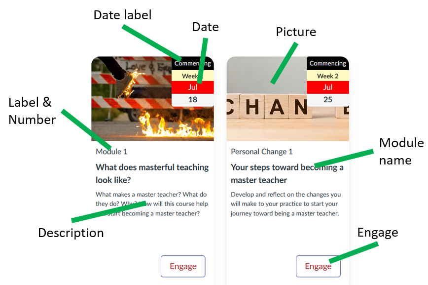
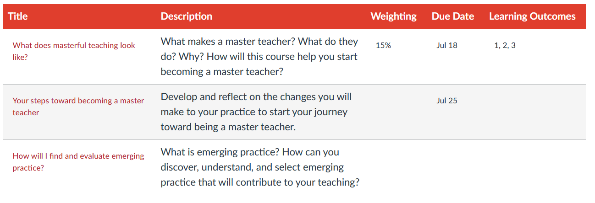

Designing the use of Canvas Collections
Canvas Collections is designed to improve the information architecture of your course site's Modules view. To embed more explicitly a design that helps your students understand and navigate your course's modules. For this reason, the true success of Canvas Collections will arise from the quality of your design.
Leverage Collections' features
In particular, how well your design leverages the features of Canvas Collections, in particular Collections and Objects/Activities. These are the features that help integrate more context and design specific information into your course sites Modules view.
Three sample questions
This page illustrates how the following questions can guide your design. Actual design will likely be more involved and iterative.
The questions are:
- What collections will you use to group modules?
- What type of objects/activities does each module represent?
- What are the relevant metadata for each module?
What collections will you use to group modules?
The following table summarises the existing modules in the sample course.
As is evident from the module names, this course has a very practical focus. Helping people understand and use Canvas Collections. Hence there was some focus on designing the course to answer common practical questions people might have. Practical questions that are typically grouped into three big questions:
- Why should we both with Canvas Collections?
- What is Canvas Collections?
- How do I and my students use Canvas Collections?
Which translates very nicely into three collections:
- Why?
- What?
- How?
| Module | Description | Collection |
|---|---|---|
| Improve Canvas' organisation of course content | Explain the problem collections solves | Why? |
| Provide "card interface" functionality in Canvas | Explain one of the benefits | Why? |
| Platform for generative development | Explain a more esoteric benefit | Why? |
| What is Canvas Collections? | Describe what it is | What? |
| What is the student experience? | Describe the student experience | What? |
| What is the teacher experience? | Describe the teacher experience | What? |
| What functionality is provided? | Overview of collection's functionality | What? |
| How does Canvas Collections work? | Describe how it works | How? |
| How do you install Canvas Collections? | Describe how to install it | How? |
| How do you configure Canvas Collections (edit the config file)? | Describe the most primitive (and deprecated) way to configure it | How? |
| How do you configure Canvas Collections? | Describe the new way to configure it | How? |
| How do you design a Blackboard course migration? | How to migrate the Card Interface from Blackboard to Collections | How? |
| An example unpublished module | Demonstrate how an unpublished module is represented | How? |
What type of objects/activities does each module represent?
As a fairly simple course focused more on self-paced information access and not connected to a formal course the modules aren't representative of something formal like a week, lecture, tutorial, theme.
However, the intent was to make sure that "students" of the course could clearly navigate to where they needed to go and have a bit of fun along the way.
What are the relevant metadata for each module?
The following table summarises the metadata currently supported by Canvas Collections and a description of current common uses. The image after that table provides a visual representation of how the metadata is used in the Cards representation.
The Configure Modules page provides examples of specifying additional metadata for a module.
| Metadata | Description | Example |
|---|---|---|
| Collection | The collection the module belongs to | Allocate modules as per your design |
| Description | Some HTML intended to provide students with a description or rationale for the object represented by the module | e.g. a synopsis or a driving question |
| Image | A visual image to represent the module | Most commonly used with the Cards representation (e.g. add an image) |
| Label & Number | Explicitly identify a module as a particular object (the label) and its position in the collection (the number - which can be auto calculated) | Lecture 1, Topic 5, Workshop are some examples |
| Date & Date Label | Specify the day/time when the activity occurs, is due etc. Through a combination of a date and a label (e.g. due, commencing etc) | Due Week 1 May 5 or Happening 5pm Fri Week 1 May 9 are some examples |
| Additional metadata | A flexible method for specifying any additional metadata in the form of pairs of name and value | The AssessmentTable representation can use additional meta data with the names learning outcomes and weighting |

Reusing metadata in different representations
Collections can use different representations to change visual appearance. For example, the following image (AssessmentTable representation) is the same collection (partially) shown in the above image (GriffithCards representation). It illustrates how a different representation reuses some metadata (description and date) and ignores other metadata (image, engage). It also shows how additional metadata (e.g. learning outcomes and weighting can be used in one representation (assessment table) but ignored in another (Griffith Cards).

Adding different metadata - please suggest
This support will continue to be expanded over time. In particular, in response to your suggestions. One way to make a suggestion is to raise an issue describing the suggestion on the Collections repository.